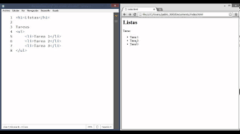

Listas

Tutorial de HTML para Principiantes, Cómo Usar Listas en HTML. (2013, octubre 9). Youtube. https://www.youtube.com/watch?v=1feR8QMRxFc
Las listas en HTML fue diseñada para crear conjuntos de elementos en forma de listas pero estas dentro de una página, en la que puede ser precedidos con un guión o número. Existen 3 tipos de listas las cuales son:
- Listas Ordenadas
Son las que se muestra en orden, ya sea alfabetico o numerico
- Listas Desordenadas
Son las que no mustra ningun orden en espeficico
- Listas de Definiciones
Son las que se utiliza para definir terminos, como si fuesen diccionarios
Listas HTML. (2021, agosto 27). Manualweb.net. http://www.manualweb.net/html/listas-html/
Enlances
File:Scielo enlaces externos.png. (s/f). Wikimedia.org. Recuperado el 19 de septiembre de 2021, de https://commons.wikimedia.org/wiki/File:Scielo_enlaces_externos.png
Los Enlaces o Hipervinculos, son los que hacen que la pagina web pueda vincular documentos a otros documentos o recursos, vincular una parte espeficica del documento dentro de la misma pagina, en pocas palabras, es la que hace que cualquier contenido web se pueda convertir en un enlace, que al darle clic, lo dirija hacia ese documento, sitio o parte referenciada del sitio.
Crear hipervínculos. (s/f). Mozilla.org. Recuperado el 19 de septiembre de 2021, de https://developer.mozilla.org/es/docs/Learn/HTML/Introduction_to_HTML/Creating_hyperlinks